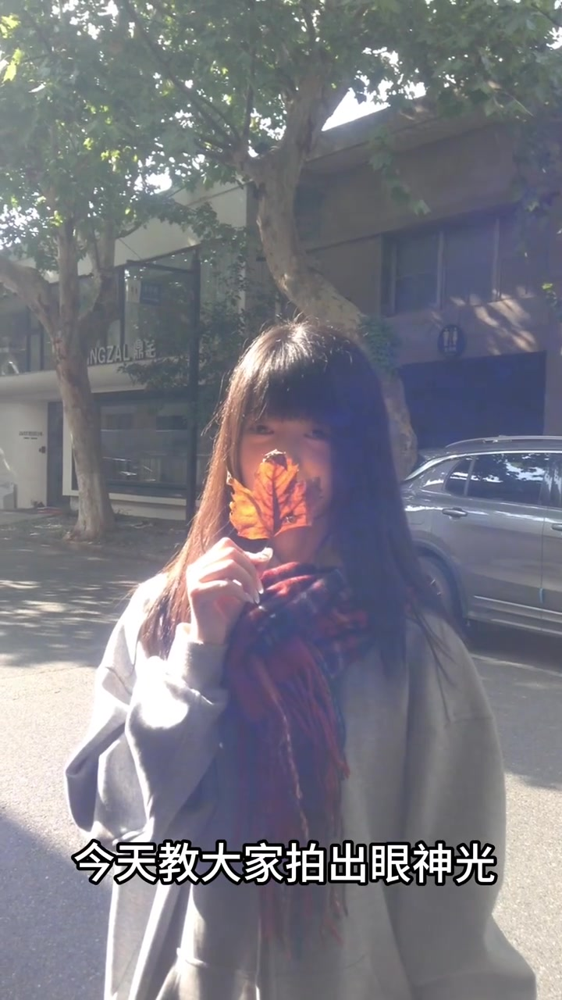
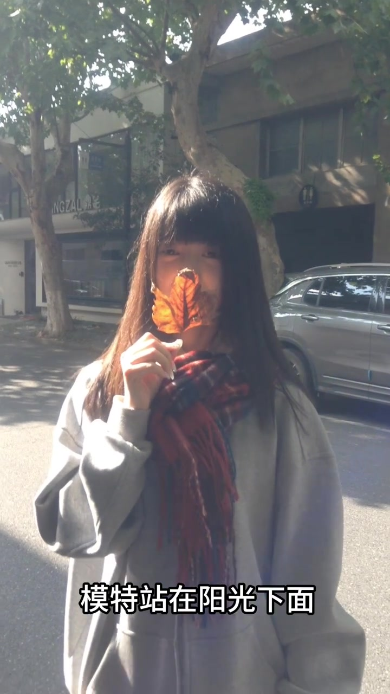
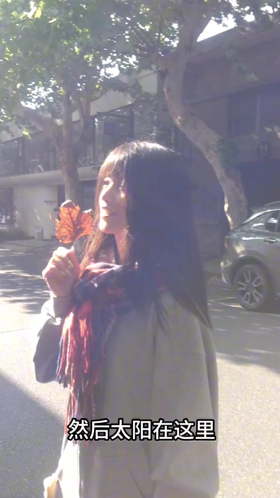
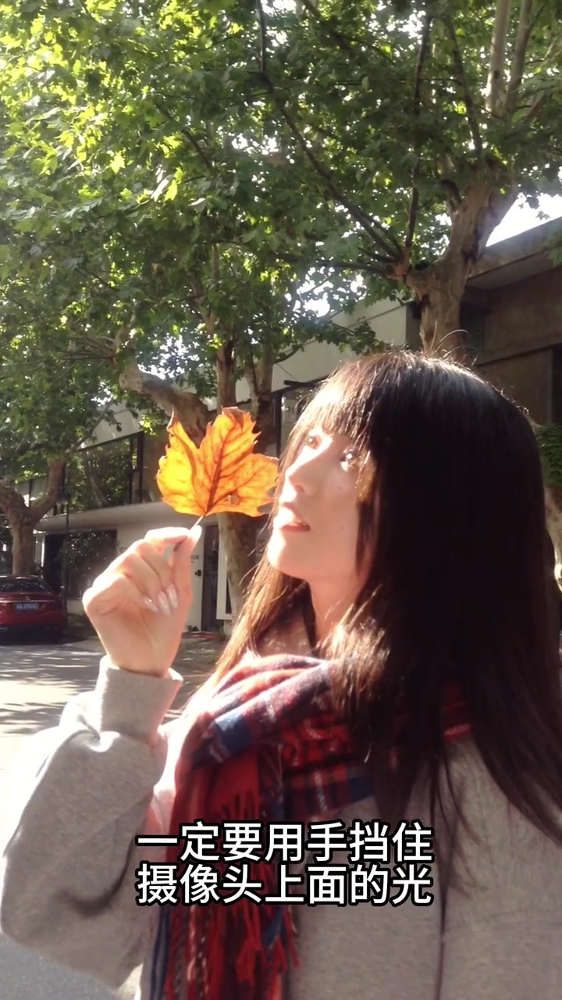
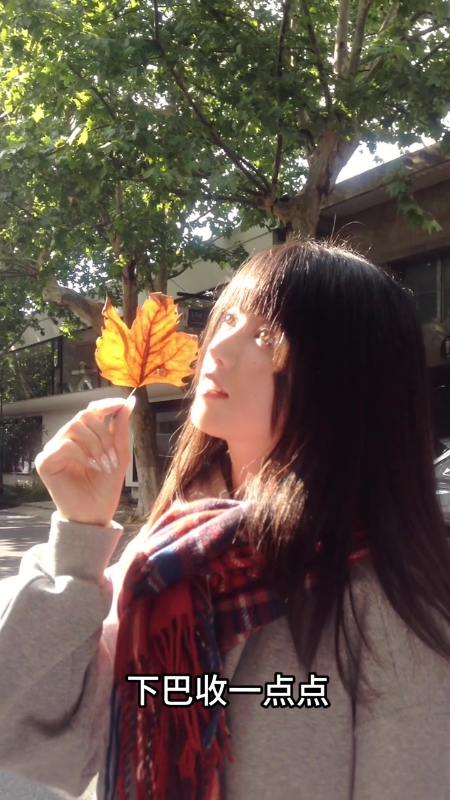
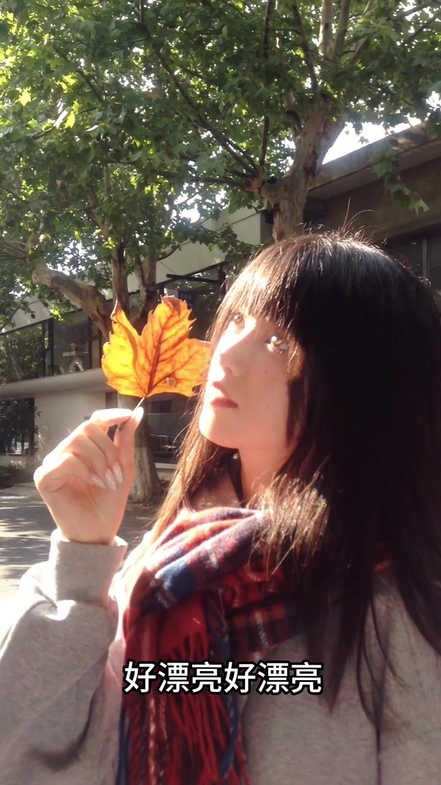

场景：模特站在阳光下面
开场就是秋日街景人像：模特拿着一片干枫叶挡在脸前，字幕直接抛出目标——今天教大家拍出眼神光。接着画面字幕点明站位：模特站在阳光下面，然后用手或镜头方向示意太阳的位置。
「今天教大家拍出眼神光」
「模特站在阳光下面」／「然后太阳在这里」
说明：Whisper 把「模特站在」识成「模特正在」。叙述按画面字幕校正；文末转录区仍完整保留原始分段。作者显示名缺失，索引以 uploader_id 标注；文案提及与 @喵鸡 合拍。



关键：一定要用手挡住摄像头上面的光
技巧核心不是换灯，而是现场控光：作者反复强调，一定要用手挡住摄像头上面的光。阳光直冲镜头顶部时容易炸成大片眩光；用手挡住上沿强光后，眼睛里仍能留下小高光（眼神光），画面不至于整片发白。
「一定要用手挡住摄像头上面的光」
确认到位时口播「欸对对对／哎对了对了」，模特继续侧脸迎光、叶脉被透亮。

微调：下巴收一点点，再夸结果
挡光确认后，画面字幕给出姿势微调：「下巴收一点点」。模特略收下巴、目光仍朝向光源方向，叶面继续透光。作者连续夸奖「好漂亮好漂亮可以」。
「下巴收一点点」
Whisper 把这句口播识成「好 先把摄像点点」；画面字幕为「下巴收一点点」，叙述以后者为准。


结果：眼神变亮，秋色涌进来
后半段进入结果感叹。Whisper 记下「好 已经好累了」与「哇 好多色彩」——前一句更可能是「好 眼睛好亮了」一类误识，后一句对应画面里橙黄眩光与透光枫叶带来的高饱和秋色。整段没有后期步骤，全部在现场用站位、挡光和姿势完成。
「哇 好多色彩」
一镜收束：阳光下站位 → 挡镜头上方光 → 收下巴迎光 → 眼睛有光、秋色也在。